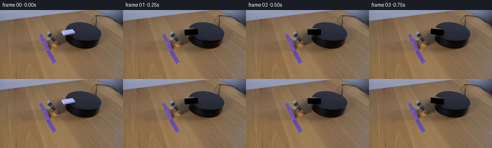
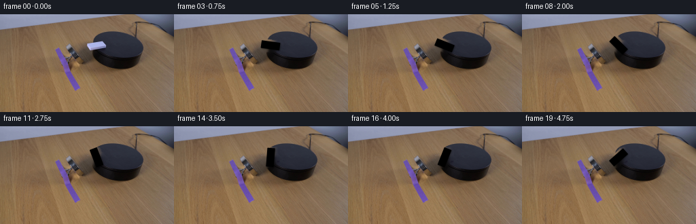
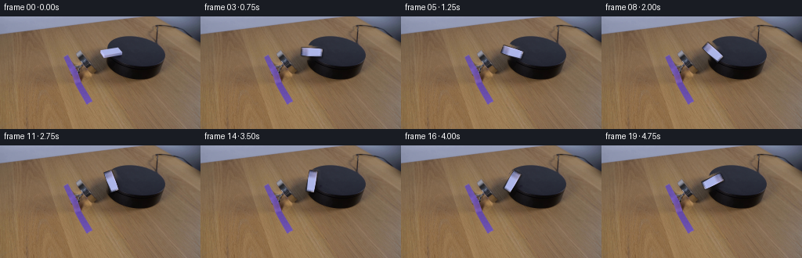
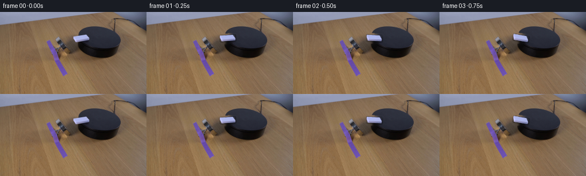

CODING AGENTS AS PIXEL WORLD MODELS
traex/DeepSeek-V4.1-Flash · 0094
点击播放 · 原生 RGB 像素
逐轮保存的候选
回放视频、检查图与代码变化。
每份候选均可单独播放。实际图片检查记录在下方工具轨迹中。
候选 01播放与检查图
点击播放 · 原生 RGB 像素


展开代码变化
--- 上一保存版本
+++ 本次保存版本
@@ -0,0 +1,267 @@
+from __future__ import annotations
+
+import math
+from pathlib import Path
+
+import cv2
+import numpy as np
+from PIL import Image
+
+import artifact_io
+
+
+WIDTH = 256
+HEIGHT = 144
+FRAME_COUNT = 20
+SUPERSAMPLE = 8
+
+
+def rounded_rect_sdf(
+ x: np.ndarray, y: np.ndarray, half_w: float, half_h: float, radius: float
+) -> np.ndarray:
+ qx = np.abs(x) - (half_w - radius)
+ qy = np.abs(y) - (half_h - radius)
+ outside = np.hypot(np.maximum(qx, 0.0), np.maximum(qy, 0.0))
+ inside = np.minimum(np.maximum(qx, qy), 0.0)
+ return outside + inside - radius
+
+
+def make_domino_assets(
+ source: np.ndarray,
+) -> tuple[np.ndarray, np.ndarray, float, tuple[float, float]]:
+ # The four corners come from the visible rectangular face in the source frame.
+ corners = np.array(
+ [
+ [129.27028, 53.621628],
+ [127.40542, 42.432434],
+ [154.64867, 37.89189],
+ [156.51352, 49.081085],
+ ],
+ dtype=np.float32,
+ )
+ center = tuple(float(v) for v in corners.mean(axis=0))
+ long_edge = 0.5 * ((corners[2] + corners[3]) - (corners[0] + corners[1]))
+ angle = math.atan2(float(long_edge[1]), float(long_edge[0]))
+ length = float(np.linalg.norm(long_edge))
+ width = float(
+ np.linalg.norm(0.5 * ((corners[0] + corners[3]) - (corners[1] + corners[2])))
+ )
+
+ tex_w = int(round(length * SUPERSAMPLE))
+ tex_h = int(round(width * SUPERSAMPLE))
+ destination = np.array(
+ [[0, 0], [tex_w - 1, 0], [tex_w - 1, tex_h - 1], [0, tex_h - 1]],
+ dtype=np.float32,
+ )
+ transform = cv2.getPerspectiveTransform(corners, destination)
+ texture = cv2.warpPerspective(
+ source,
+ transform,
+ (tex_w, tex_h),
+ flags=cv2.INTER_CUBIC,
+ borderMode=cv2.BORDER_REPLICATE,
+ )
+
+ yy, xx = np.mgrid[:tex_h, :tex_w].astype(np.float32)
+ local_x = (xx + 0.5) / SUPERSAMPLE - length / 2
+ local_y = (yy + 0.5) / SUPERSAMPLE - width / 2
+ sdf = rounded_rect_sdf(local_x, local_y, length / 2, width / 2, 0.65)
+ alpha = np.clip(0.5 - sdf * SUPERSAMPLE, 0.0, 1.0)
+
+ # Extend the face color through the antialiased border so rotation never
+ # introduces a dark source-background fringe.
+ interior = alpha > 0.92
+ nearest = cv2.distanceTransformWithLabels(
+ (~interior).astype(np.uint8),
+ cv2.DIST_L2,
+ 5,
+ labelType=cv2.DIST_LABEL_PIXEL,
+ )[1]
+ flat_texture = texture.reshape(-1, 3)
+ ys, xs = np.nonzero(interior)
+ if len(xs):
+ label_to_color = np.zeros((int(nearest.max()) + 1, 3), dtype=np.float32)
+ label_to_color[nearest[ys, xs]] = flat_texture[ys * tex_w + xs]
+ filled = label_to_color[nearest].reshape(texture.shape)
+ texture = np.where(interior[..., None], texture, filled).astype(np.uint8)
+
+ return texture, alpha.astype(np.float32), angle, center
+
+
+def make_clean_plate(source: np.ndarray, center: tuple[float, float]) -> np.ndarray:
+ mask = np.zeros((HEIGHT, WIDTH), dtype=np.uint8)
+ polygon = np.array(
+ [
+ [122, 37],
+ [151, 31],
+ [163, 46],
+ [136, 61],
+ ],
+ dtype=np.int32,
+ )
+ cv2.fillPoly(mask, [polygon], 255)
+ mask = cv2.dilate(mask, np.ones((3, 3), dtype=np.uint8), iterations=1)
+ plate = cv2.inpaint(source, mask, 5.0, cv2.INPAINT_TELEA)
+
+ # Suppress the long inpaint streaks while retaining the local platform
+ # gradient and the surrounding table grain.
+ soft = cv2.GaussianBlur(plate, (0, 0), 0.65)
+ plate[mask > 0] = soft[mask > 0]
+ return plate
+
+
+def warp_sprite(
+ texture: np.ndarray,
+ alpha: np.ndarray,
+ angle: float,
+ center: tuple[float, float],
+) -> tuple[np.ndarray, np.ndarray]:
+ tx = np.zeros((HEIGHT, WIDTH), dtype=np.float32)
+ ta = np.zeros((HEIGHT, WIDTH), dtype=np.float32)
+
+ h, w = texture.shape[:2]
+ rotation = np.array(
+ [[math.cos(angle), -math.sin(angle)], [math.sin(angle), math.cos(angle)]],
+ dtype=np.float32,
+ )
+ # Work at sprite resolution and translate its center directly into frame
+ # coordinates before downsampling. This keeps subpixel rotation smooth.
+ source_center = np.array([(w - 1) * 0.5, (h - 1) * 0.5], dtype=np.float32)
+ target_center = np.array(center, dtype=np.float32) * SUPERSAMPLE
+ matrix = np.zeros((2, 3), dtype=np.float32)
+ matrix[:, :2] = rotation
+ matrix[:, 2] = target_center - rotation @ source_center
+
+ tex_x = np.zeros((HEIGHT * SUPERSAMPLE, WIDTH * SUPERSAMPLE), dtype=np.float32)
+ tex_y = np.zeros_like(tex_x)
+ tex_z = np.zeros_like(tex_x)
+ cv2.warpAffine(
+ texture,
+ matrix,
+ (WIDTH * SUPERSAMPLE, HEIGHT * SUPERSAMPLE),
+ dst=tex_x,
+ flags=cv2.INTER_LINEAR,
+ borderMode=cv2.BORDER_CONSTANT,
+ borderValue=(0, 0, 0),
+ )
+ # warpAffine has one destination buffer, so warp each color channel and
+ # alpha separately below using the same transform.
+ channels = []
+ for channel in range(3):
+ dst = np.zeros_like(tex_y)
+ cv2.warpAffine(
+ texture[..., channel],
+ matrix,
+ (WIDTH * SUPERSAMPLE, HEIGHT * SUPERSAMPLE),
+ dst=dst,
+ flags=cv2.INTER_LINEAR,
+ borderMode=cv2.BORDER_CONSTANT,
+ borderValue=0,
+ )
+ channels.append(dst)
+ warped_texture = cv2.merge(channels)
+ cv2.warpAffine(
+ alpha,
+ matrix,
+ (WIDTH * SUPERSAMPLE, HEIGHT * SUPERSAMPLE),
+ dst=tex_z,
+ flags=cv2.INTER_LINEAR,
+ borderMode=cv2.BORDER_CONSTANT,
+ borderValue=0,
+ )
+
+ warped_texture = cv2.resize(
+ warped_texture, (WIDTH, HEIGHT), interpolation=cv2.INTER_AREA
+ )
+ warped_alpha = cv2.resize(tex_z, (WIDTH, HEIGHT), interpolation=cv2.INTER_AREA)
+ return warped_texture, np.clip(warped_alpha, 0.0, 1.0)
+
+
+def render_frame(
+ source: np.ndarray,
+ plate: np.ndarray,
+ texture: np.ndarray,
+ alpha: np.ndarray,
+ angle: float,
+ center: tuple[float, float],
+ original_mask: np.ndarray,
+) -> np.ndarray:
+ if angle == 0.0:
+ return source.copy()
+
+ object_rgb, object_alpha = warp_sprite(texture, alpha, angle, center)
+
+ # A tight contact shadow and a wider soft shadow keep the piece seated on
+ # the platform instead of appearing to float above it.
+ tight = cv2.warpAffine(
+ object_alpha,
+ np.array([[1, 0, 0.35], [0, 1, 0.65]], dtype=np.float32),
+ (WIDTH, HEIGHT),
+ flags=cv2.INTER_LINEAR,
+ borderMode=cv2.BORDER_CONSTANT,
+ )
+ tight = cv2.GaussianBlur(tight, (0, 0), 0.48)
+ broad = cv2.warpAffine(
+ object_alpha,
+ np.array([[1, 0, 0.9], [0, 1, 1.25]], dtype=np.float32),
+ (WIDTH, HEIGHT),
+ flags=cv2.INTER_LINEAR,
+ borderMode=cv2.BORDER_CONSTANT,
+ )
+ broad = cv2.GaussianBlur(broad, (0, 0), 1.25)
+ shadow = np.clip(0.27 * tight + 0.23 * broad, 0.0, 0.48)
+
+ dynamic = (object_alpha > 0.004) | (shadow > 0.004) | original_mask
+ dynamic = cv2.dilate(dynamic.astype(np.uint8), np.ones((3, 3), np.uint8))
+ dynamic = cv2.GaussianBlur(dynamic.astype(np.float32), (0, 0), 0.55)
+
+ base = plate.astype(np.float32)
+ base *= 1.0 - shadow[..., None]
+ composed = base * (1.0 - object_alpha[..., None]) + object_rgb * object_alpha[..., None]
+ output = source.astype(np.float32)
+ blend = dynamic[..., None]
+ output = output * (1.0 - blend) + composed * blend
+ return np.clip(np.rint(output), 0, 255).astype(np.uint8)
+
+
+def main() -> None:
+ case_dir = Path(__file__).resolve().parent
+ source = np.array(Image.open(case_dir / "first_frame.png").convert("RGB"))
+ if source.shape != (HEIGHT, WIDTH, 3):
+ raise ValueError(f"unexpected first-frame shape: {source.shape}")
+
+ texture, alpha, initial_angle, center = make_domino_assets(source)
+ plate = make_clean_plate(source, center)
+
+ original_mask = np.zeros((HEIGHT, WIDTH), dtype=bool)
+ polygon = np.array(
+ [[128, 44], [150, 39], [157, 48], [132, 53]], dtype=np.int32
+ )
+ cv2.fillPoly(original_mask.view(np.uint8), [polygon], 1)
+ original_mask = original_mask.astype(bool)
+
+ frames = []
+ for index in range(FRAME_COUNT):
+ # Clockwise screen rotation, with a gentle ease-in as the magnet takes
+ # hold and a steady turn through the remainder of the shot.
+ t = index / (FRAME_COUNT - 1)
+ eased = 0.10 * t + 0.90 * (t**1.18)
+ angle = initial_angle + math.radians(148.0) * eased
+ frames.append(
+ render_frame(
+ source,
+ plate,
+ texture,
+ alpha,
+ angle,
+ center,
+ original_mask,
+ )
+ )
+
+ frames[0] = source.copy()
+ artifact_io.save(np.stack(frames), case_dir)
+
+
+if __name__ == "__main__":
+ main()
候选 02播放与检查图
点击播放 · 原生 RGB 像素

展开代码变化
--- 上一保存版本
+++ 本次保存版本
@@ -132,39 +132,22 @@
matrix[:, :2] = rotation
matrix[:, 2] = target_center - rotation @ source_center
- tex_x = np.zeros((HEIGHT * SUPERSAMPLE, WIDTH * SUPERSAMPLE), dtype=np.float32)
- tex_y = np.zeros_like(tex_x)
- tex_z = np.zeros_like(tex_x)
- cv2.warpAffine(
- texture,
- matrix,
- (WIDTH * SUPERSAMPLE, HEIGHT * SUPERSAMPLE),
- dst=tex_x,
- flags=cv2.INTER_LINEAR,
- borderMode=cv2.BORDER_CONSTANT,
- borderValue=(0, 0, 0),
- )
- # warpAffine has one destination buffer, so warp each color channel and
- # alpha separately below using the same transform.
channels = []
for channel in range(3):
- dst = np.zeros_like(tex_y)
- cv2.warpAffine(
+ warped = cv2.warpAffine(
texture[..., channel],
matrix,
(WIDTH * SUPERSAMPLE, HEIGHT * SUPERSAMPLE),
- dst=dst,
flags=cv2.INTER_LINEAR,
borderMode=cv2.BORDER_CONSTANT,
borderValue=0,
)
- channels.append(dst)
+ channels.append(warped.astype(np.float32))
warped_texture = cv2.merge(channels)
- cv2.warpAffine(
+ warped_alpha = cv2.warpAffine(
alpha,
matrix,
(WIDTH * SUPERSAMPLE, HEIGHT * SUPERSAMPLE),
- dst=tex_z,
flags=cv2.INTER_LINEAR,
borderMode=cv2.BORDER_CONSTANT,
borderValue=0,
@@ -173,7 +156,7 @@
warped_texture = cv2.resize(
warped_texture, (WIDTH, HEIGHT), interpolation=cv2.INTER_AREA
)
- warped_alpha = cv2.resize(tex_z, (WIDTH, HEIGHT), interpolation=cv2.INTER_AREA)
+ warped_alpha = cv2.resize(warped_alpha, (WIDTH, HEIGHT), interpolation=cv2.INTER_AREA)
return warped_texture, np.clip(warped_alpha, 0.0, 1.0)
候选 04播放与检查图
点击播放 · 原生 RGB 像素

展开代码变化
--- 上一保存版本
+++ 本次保存版本
@@ -169,7 +169,7 @@
center: tuple[float, float],
original_mask: np.ndarray,
) -> np.ndarray:
- if angle == 0.0:
+ if angle is None:
return source.copy()
object_rgb, object_alpha = warp_sprite(texture, alpha, angle, center)
@@ -228,8 +228,11 @@
# Clockwise screen rotation, with a gentle ease-in as the magnet takes
# hold and a steady turn through the remainder of the shot.
t = index / (FRAME_COUNT - 1)
- eased = 0.10 * t + 0.90 * (t**1.18)
- angle = initial_angle + math.radians(148.0) * eased
+ # Almost imperceptible settling, then a smooth clockwise turn.
+ eased = 0.035 * t + 0.965 * (t**1.32)
+ angle = initial_angle + math.radians(165.0) * eased
+ if index == 0:
+ angle = None
frames.append(
render_frame(
source,
候选 05播放与检查图
点击播放 · 原生 RGB 像素
展开代码变化
--- 上一保存版本
+++ 本次保存版本
@@ -50,7 +50,12 @@
tex_w = int(round(length * SUPERSAMPLE))
tex_h = int(round(width * SUPERSAMPLE))
destination = np.array(
- [[0, 0], [tex_w - 1, 0], [tex_w - 1, tex_h - 1], [0, tex_h - 1]],
+ [
+ [0, tex_h - 1],
+ [0, 0],
+ [tex_w - 1, 0],
+ [tex_w - 1, tex_h - 1],
+ ],
dtype=np.float32,
)
transform = cv2.getPerspectiveTransform(corners, destination)
候选 06播放与检查图
点击播放 · 原生 RGB 像素

展开代码变化
--- 上一保存版本
+++ 本次保存版本
@@ -131,7 +131,7 @@
)
# Work at sprite resolution and translate its center directly into frame
# coordinates before downsampling. This keeps subpixel rotation smooth.
- source_center = np.array([(w - 1) * 0.5, (h - 1) * 0.5], dtype=np.float32)
+ source_center = np.array([w * 0.5, h * 0.5], dtype=np.float32)
target_center = np.array(center, dtype=np.float32) * SUPERSAMPLE
matrix = np.zeros((2, 3), dtype=np.float32)
matrix[:, :2] = rotation
@@ -233,9 +233,8 @@
# Clockwise screen rotation, with a gentle ease-in as the magnet takes
# hold and a steady turn through the remainder of the shot.
t = index / (FRAME_COUNT - 1)
- # Almost imperceptible settling, then a smooth clockwise turn.
- eased = 0.035 * t + 0.965 * (t**1.32)
- angle = initial_angle + math.radians(165.0) * eased
+ eased = 0.12 * t + 0.88 * t**1.16
+ angle = initial_angle + math.radians(158.0) * eased
if index == 0:
angle = None
frames.append(
可观测工具轨迹
实际执行的命令与返回图片。
命令 1exit 0
/bin/bash -c "pwd && rg --files -g '"'!*.mp4'"' -g '"'!*.mov'"' | sort"
命令 2exit 0
/bin/bash -c "sed -n '1,240p' prompt.txt"
命令 3exit 0
/bin/bash -c "sed -n '1,280p' GENERATION_RULES.md"
命令 4exit 0
/bin/bash -c 'file first_frame.png && identify first_frame.png 2>/dev/null || true && ls -la'
命令 5exit 0
/bin/bash -c "sed -n '1,260p' artifact_io.py"
命令 6exit 0
/bin/bash -c "sed -n '1,260p' player_template.html"
命令 7exit 0
/bin/bash -c "python3 - <<'PY'
from PIL import Image
import numpy as np
im=Image.open('first_frame.png')
print(im.mode, im.size)
a=np.array(im.convert('RGB'))
print(a.shape, a.dtype)
print('min', a.reshape(-1,3).min(0), 'max', a.reshape(-1,3).max(0), 'mean', a.reshape(-1,3).mean(0))
# unique colors and top counts
u,c=np.unique(a.reshape(-1,3), axis=0, return_counts=True)
idx=np.argsort(c)[-30:][::-1]
for i in idx:
print(tuple(u[i]), int(c[i]))
PY"命令 8exit 0
/bin/bash -c "python3 - <<'PY'
try:
import cv2; print('cv2', cv2.__version__)
except Exception as e: print('no cv2', e)
try:
import scipy; print('scipy', scipy.__version__)
except Exception as e: print('no scipy', e)
try:
import sklearn; print('sklearn', sklearn.__version__)
except Exception as e: print('no sklearn', e)
PY"命令 9exit 0
/bin/bash -c "python3 - <<'PY'
from PIL import Image
import numpy as np
im=np.array(Image.open('first_frame.png').convert('RGB'))
# 8x8 downsample with truecolor backgrounds, two spaces each
for y in range(0,144,8):
line=''
for x in range(0,256,8):
b=im[y:y+8,x:x+8].mean((0,1)).astype(int)
line+=f'\\x1b[48;2;{b[0]};{b[1]};{b[2]}m '
print(line+'\\x1b[0m')
PY"命令 10exit 0
/bin/bash -c "python3 - <<'PY'
from PIL import Image
im=Image.open('first_frame.png')
im.resize((1024,576), Image.Resampling.NEAREST).save('.tmp/first_zoom.png')
# Generate more useful indexed coarse palette mapping via edge-preserving resized thumbnail
im.resize((128,72), Image.Resampling.BOX).save('.tmp/first_128.png')
PY"命令 11exit 0
/bin/bash -c "python3 - <<'PY'
from PIL import Image
import numpy as np
from scipy import ndimage
im=np.array(Image.open('first_frame.png').convert('RGB')).astype(float)
# Candidate region white pixels within lower half, excluding upper backdrop
for desc,mask in [
('bright low', (im[:,:,0]>140)&(im[:,:,1]>140)&(im[:,:,2]>140)&(np.indices(im.shape[:2])[0]>35)),
('cool low', (im[:,:,2]>im[:,:,0]+12)&(np.indices(im.shape[:2])[0]>35)),
('blue', (im[:,:,2]>100)&(im[:,:,2]>im[:,:,0]*1.15)&(np.indices(im.shape[:2])[0]>25)),
]:
lab,n=ndimage.label(mask)
print(desc,n)
for k in range(1,n+1):
ys,xs=np.where(lab==k)
if len(xs)>=3:
print(len(xs), (xs.min(),ys.min(),xs.max(),ys.max()), 'mean rgb', im[ys,xs].mean(0).round(1))
PY"命令 12exit 0
/bin/bash -c "python3 - <<'PY'
from PIL import Image
import numpy as np
im=np.array(Image.open('first_frame.png').convert('RGB'))
# Character map based on luminance and saturation, every 2x2 avg
for y in range(0,144,4):
line=''
for x in range(0,256,4):
b=im[y:y+4,x:x+4].mean((0,1))
l=b.mean(); sat=b.max()-b.min()
if l<20: ch=' '
elif l<35: ch='.'
elif l<55: ch=':'
elif l<80: ch='o'
elif l<110: ch='O'
elif l<140: ch='#'
elif l<165: ch='%'
else: ch='@'
line+=ch
print(line.rstrip())
PY"命令 13exit 0
/bin/bash -c "python3 - <<'PY'
from PIL import Image
import numpy as np
from sklearn.cluster import KMeans
im=np.array(Image.open('first_frame.png').convert('RGB'))
a=im.reshape(-1,3)
km=KMeans(n_clusters=16, random_state=0, n_init=10).fit(a[::4])
lbl=km.predict(a).reshape(im.shape[:2]); c=km.cluster_centers_.astype(int)
order=np.argsort(c.mean(1))
for j,i in enumerate(order):
ys,xs=np.where(lbl==i)
print(j, 'n',len(xs),'rgb',tuple(c[i]),'bbox',(xs.min(),ys.min(),xs.max(),ys.max()),'centroid',(round(xs.mean(),1),round(ys.mean(),1)))
chars=' .:-=+*#%@ABCDEFGHIJKLMNOPQRSTUVWXYZ'
# map label to order chars
for y in range(0,144,4):
line=''
for x in range(0,256,2):
z=lbl[y:y+4,x:x+2].astype(int)
counts=np.bincount(z.ravel(),minlength=16); i=counts.argmax(); rank=int(np.where(order==i)[0][0]); line+=chars[rank]
print(line.rstrip())
PY"命令 14exit 0
/bin/bash -c "python3 - <<'PY'
from PIL import Image
import numpy as np
im=np.array(Image.open('first_frame.png').convert('RGB'))
# print pixel bbox and row spans of blue-ish domino top.
mask=(im[:,:,2]>im[:,:,0]+25)&(im[:,:,2]>120)&(np.indices(im.shape[:2])[0]>=30)&(np.indices(im.shape[:2])[0]<65)
ys,xs=np.where(mask)
print('blue mask',len(xs),(xs.min(),ys.min(),xs.max(),ys.max()))
for y in range(34,61):
xx=np.where(mask[y])[0]
if len(xx): print(y,xx.min(),xx.max(),len(xx))
# dark black platform region profile
print('dark rows')
for y in range(45,90):
xx=np.where((im[y].mean(1)<40))[0]
if len(xx): print(y,xx.min(),xx.max(),len(xx))
PY"命令 15exit 0
/bin/bash -c "python3 - <<'PY'
from PIL import Image
import numpy as np
im=np.array(Image.open('first_frame.png').convert('RGB')).astype(int)
# classify pixels every 1x2 vertical averaging in x75..215 y25..120
for y in range(25,121,2):
line=''
for x in range(75,216,2):
b=im[y:y+2,x:x+2].mean((0,1)); r,g,bl=b
l=b.mean(); sat=b.max()-b.min()
if bl>r+22 and bl>g+15 and l>100: ch='D' # bright blue/white
elif bl>r+25 and l<120: ch='B' # blue dark
elif bl>r+20 and r>80: ch='M' # purple
elif l<25: ch='#'
elif l<45: ch='X'
elif l<70 and bl>=r: ch='x'
elif r>g+18 and g>bl+12: ch='w' # wood
elif l<100: ch='o'
elif l<135: ch='O'
elif l<170: ch='W'
else: ch='@'
line+=ch
print(f'{y:3d} '+line)
PY"命令 16exit 0
/bin/bash -c "python3 - <<'PY'
from PIL import Image
import numpy as np
im=np.array(Image.open('first_frame.png').convert('RGB')).astype(int)
# pixel patches colors grid around regions
for name,(x0,y0,x1,y1) in {
'domino':(125,36,160,56),'magnet':(80,48,120,113),'platform':(90,50,210,85),'table':(20,70,230,120),'top':(0,0,100,20)
}.items():
p=im[y0:y1,x0:x1]
print(name,'mean',p.mean((0,1)).round(1),'median',np.median(p.reshape(-1,3),0),'q',np.percentile(p.reshape(-1,3),[10,90],axis=0).round(0))
PY"命令 17exit 0
/bin/bash -c "python3 - <<'PY'
from PIL import Image
import numpy as np
im=np.array(Image.open('first_frame.png').convert('RGB')).astype(float)
# build edge map over grayscale and color gradient; list strong line structures in relevant crop via Hough
import cv2
gray=cv2.cvtColor(im.astype('uint8'),cv2.COLOR_RGB2GRAY)
edges=cv2.Canny(gray,40,100)
lines=cv2.HoughLinesP(edges,1,np.pi/180,threshold=15,minLineLength=8,maxLineGap=4)
for l in sorted(lines[:,0].tolist(), key=lambda q:(q[1],q[0]))[:100]: print(l)
PY"命令 18exit 0
/bin/bash -c "python3 - <<'PY'
from PIL import Image
import numpy as np
from scipy import ndimage
im=np.array(Image.open('first_frame.png').convert('RGB')).astype(float)
# high blue areas. print top labels
score=im[:,:,2]-(im[:,:,0]+im[:,:,1])/2
for th in [15,25,35,45,55]:
m=(score>th)&(np.indices(score.shape)[0]>30)
lab,n=ndimage.label(m)
arr=[]
for k in range(1,n+1):
ys,xs=np.where(lab==k)
if len(xs)>10: arr.append((len(xs),(xs.min(),ys.min(),xs.max(),ys.max()),score[ys,xs].mean()))
print('th',th,sorted(arr,reverse=True)[:10])
PY"命令 19exit 0
/bin/bash -c "python3 - <<'PY'
from PIL import Image
import numpy as np
im=np.array(Image.open('first_frame.png').convert('RGB')).astype(float)
score=im[:,:,2]-(im[:,:,0]+im[:,:,1])/2
# Print per-row extents in x75..165 y35..60 at score >20
for y in range(35,61):
xs=np.where(score[y,70:170]>20)[0]+70
if len(xs): print(y, int(xs.min()), int(xs.max()), len(xs), 'blue score max',round(score[y,xs].max(),1))
print('domino top rows details')
for y in range(38,55):
row=im[y]
# print x and RGB at every 2
print(y, [(x,tuple(row[x].astype(int))) for x in range(125,160,4)])
PY"命令 20exit 0
/bin/bash -c "python3 - <<'PY'
from PIL import Image
import numpy as np
im=np.array(Image.open('first_frame.png').convert('RGB')).astype(float)
# Table texture: vertical/horizontal profiles lower region, residual after large gaussian blur
import scipy.ndimage as ndi
for sigma in [1,3,8,20]:
b=ndi.gaussian_filter(im,sigma=(sigma,sigma,0))
print('sigma',sigma,'resid std', (im-b).std((0,1)))
# Values at selected grid
for y in [20,30,40,50,60,70,80,90,100,110,120,130,140]:
print('y',y,[(x,tuple(im[y,x].astype(int))) for x in [0,20,40,60,80,100,120,140,160,180,200,220,240,255]])
PY"命令 21exit 0
/bin/bash -c "python3 - <<'PY'
from PIL import Image
import numpy as np
im=np.array(Image.open('first_frame.png').convert('RGB')).astype(int)
# exact pixel map x120..165 y34..58
for y in range(34,59):
line=''
for x in range(120,166):
r,g,b=im[y,x]; l=(r+g+b)/3; bs=b-(r+g)/2
if r>145 and g>150 and b>185: ch='W'
elif r>115 and g>120 and b>150: ch='w'
elif r>85 and g>88 and b>115: ch='c'
elif l<20: ch='#'
elif l<35 and b>=r: ch='x'
elif l<48 and b>=r: ch='X'
elif b>=r+15: ch='B'
elif r>g+20 and g>b+10: ch='o'
elif l<70: ch='+'
elif l<105: ch='-'
elif l<135: ch='.'
elif l<165: ch=':'
else: ch='@'
line+=ch
print(f'{y:2d} {line}')
print(' '+''.join(str(x//10%10) for x in range(120,166)))
print(' '+''.join(str(x%10) for x in range(120,166)))
PY"命令 22exit 0
/bin/bash -c "python3 - <<'PY'
from PIL import Image
import numpy as np
from scipy import ndimage
im=np.array(Image.open('first_frame.png').convert('RGB')).astype(float)
score=im[:,:,2]-(im[:,:,0]+im[:,:,1])/2
mask=(score>15)&(np.indices(score.shape)[0]>30)&(np.indices(score.shape)[0]<65)
lab,n=ndimage.label(mask)
# component with bbox x 128
for k in range(1,n+1):
ys,xs=np.where(lab==k)
if len(xs)>100:
pts=np.column_stack([xs,ys]); c=pts.mean(0); cov=np.cov(pts-c,rowvar=False); w,v=np.linalg.eigh(cov); major=v[:,w.argmax()]; angle=np.degrees(np.arctan2(major[1],major[0]));
print('comp',k,len(xs),'bbox',xs.min(),ys.min(),xs.max(),ys.max(),'centroid',c,'angle',angle,'eig',w)
print('rows')
for y in range(ys.min(),ys.max()+1):
xx=np.where(lab[y]==k)[0]
if len(xx): print(y,xx.min(),xx.max(),len(xx))
PY"命令 23exit 0
/bin/bash -c "python3 - <<'PY'
from PIL import Image
import numpy as np
im=np.array(Image.open('first_frame.png').convert('RGB')).astype(float)
# The white domino appears tilted -17 degrees in screen x-right/y-down. Estimate center and polygon vertices from blue mask convex hull.
from scipy import ndimage
import cv2
score=im[:,:,2]-(im[:,:,0]+im[:,:,1])/2
m=((score>15)&(np.indices(score.shape)[0]>=35)&(np.indices(score.shape)[0]<56)&(np.indices(score.shape)[1]>=120)&(np.indices(score.shape)[1]<160)).astype('uint8')
contours,_=cv2.findContours(m,cv2.RETR_EXTERNAL,cv2.CHAIN_APPROX_SIMPLE)
for c in contours:
if cv2.contourArea(c)>30:
print('area',cv2.contourArea(c),'rect',cv2.minAreaRect(c),'box',cv2.boxPoints(cv2.minAreaRect(c)))
hull=cv2.convexHull(c)
M=cv2.moments(c); print('centroid',M['m10']/M['m00'],M['m01']/M['m00'])
PY"命令 24exit 0
/bin/bash -c "python3 - <<'PY'
from PIL import Image
import numpy as np, cv2
im=np.array(Image.open('first_frame.png').convert('RGB')).astype(float)
score=im[:,:,2]-(im[:,:,0]+im[:,:,1])/2
m=((score>15)&(np.indices(score.shape)[0]>=35)&(np.indices(score.shape)[0]<56)&(np.indices(score.shape)[1]>=120)&(np.indices(score.shape)[1]<160)).astype('uint8')
# largest component
n,l,st,cen=cv2.connectedComponentsWithStats(m)
i=1+np.argmax(st[1:,cv2.CC_STAT_AREA]); m=(l==i).astype('uint8')
cs,_=cv2.findContours(m,cv2.RETR_EXTERNAL,cv2.CHAIN_APPROX_SIMPLE); c=max(cs,key=cv2.contourArea)
h=cv2.convexHull(c)
eps=cv2.approxPolyDP(h,0.8,True)
print('hull points',h.reshape(-1,2).tolist())
print('approx',eps.reshape(-1,2).tolist())
# fit lines to top/bottom boundaries using each x min/max y
for x in range(128,157):
ys=np.where(m[:,x])[0]
if len(ys): print(x,ys.min(),ys.max(),len(ys))
PY"命令 25exit 0
/bin/bash -c "python3 - <<'PY'
from PIL import Image
import numpy as np
im=np.array(Image.open('first_frame.png').convert('RGB'))
# show pixel crop as 2x scale using sixel? print RGB values at polygon center sampling coordinates, useful texture
for y in range(39,53):
print(y, [(x,tuple(im[y,x])) for x in range(128,157,3)])
PY"命令 26exit 1
/bin/bash -c "python3 - <<'PY'
from PIL import Image
import numpy as np
im=np.array(Image.open('first_frame.png').convert('RGB')).astype(float)
# Analyze global smooth structure: crop away upper background and object, fit 2D polynomial per channel.
yy,xx=np.mgrid[:144,:256]
mask=np.ones((144,256),bool)
mask[:85,100:215]=False # platform+object
# keep table outside central
mask &= (yy>0)
sel=mask & (((xx<90)|(xx>210)) | (yy>85))
for ch in range(3):
coef=np.polynomial.polynomial.polyfit([xx[sel],yy[sel]], im[:,:,ch][sel], deg=3)
# calculate least squares with terms
terms=[(0,0),(1,0),(0,1),(2,0),(1,1),(0,2),(3,0),(2,1),(1,2),(0,3)]
A=np.column_stack([(xx[sel]**i)*(yy[sel]**j) for i,j in terms])
for ch in range(3):
c=np.linalg.lstsq(A,im[:,:,ch][sel],rcond=None)[0]
pred=np.zeros((144,256));
for v,(i,j) in zip(c,terms): pred+=v*(xx**i)*(yy**j)
print(ch,c.round(3),'resid',np.std(im[:,:,ch][sel]-pred[sel]),'range',pred[sel].min(),pred[sel].max())
PY"命令 27exit 0
/bin/bash -c "python3 - <<'PY'
from PIL import Image
import numpy as np, cv2
src=np.array(Image.open('first_frame.png').convert('RGB'))
mask=np.zeros((144,256),np.uint8)
poly=np.array([[125,39],[151,34],[160,47],[134,57]],np.int32)
cv2.fillPoly(mask,[poly],255)
mask=cv2.dilate(mask,np.ones((3,3),np.uint8),iterations=1)
for method,name in [(cv2.INPAINT_TELEA,'telea'),(cv2.INPAINT_NS,'ns')]:
out=cv2.inpaint(src,mask,4,method)
Image.fromarray(out).save('.tmp/bg_'+name+'.png')
# crop ascii
print(name)
for y in range(34,59,2):
line=''
for x in range(120,167,2):
b=out[y:y+2,x:x+2].mean((0,1)).astype(int); r,g,bl=b; l=b.mean(); bs=bl-(r+g)/2
if r>145 and g>150 and bl>185: ch='W'
elif r>115 and g>120 and bl>150: ch='w'
elif r>85 and g>88 and bl>115: ch='c'
elif l<20: ch='#'
elif l<35 and bl>=r: ch='x'
elif l<48 and bl>=r: ch='X'
elif bl>=r+15: ch='B'
elif r>g+20 and g>bl+10: ch='o'
elif l<70: ch='+'
elif l<105: ch='-'
elif l<135: ch='.'
elif l<165: ch=':'
else: ch='@'
line+=ch
print(f'{y:2d} {line}')
PY"命令 28exit 0
/bin/bash -c "python3 - <<'PY'
from PIL import Image
import numpy as np
for name in ['telea','ns']:
im=np.array(Image.open('.tmp/bg_'+name+'.png'))
print(name)
for y in [40,42,44,46,48,50,52]:
print(y,[(x,tuple(im[y,x])) for x in [126,130,134,138,142,146,150,154,158]])
PY"命令 29exit 0
/bin/bash -c "python3 - <<'PY'
from PIL import Image
import numpy as np, cv2
src=np.array(Image.open('first_frame.png').convert('RGB'))
mask=np.zeros((144,256),np.uint8)
poly=np.array([[125,38],[151,34],[161,47],[134,58]],np.int32)
cv2.fillPoly(mask,[poly],255)
mask=cv2.dilate(mask,np.ones((5,5),np.uint8),iterations=1)
bg=cv2.inpaint(src,mask,6,cv2.INPAINT_TELEA)
# Smooth only inpaint region plus 2 px ring to avoid patch edges, using interpolation across boundaries more aggressively
# Use Gaussian blend of inpaint where mask and preserve source elsewhere
inner=mask>0
blur=cv2.GaussianBlur(bg,(0,0),1.5)
bg2=bg.copy(); bg2[inner]=blur[inner]
Image.fromarray(bg2).save('.tmp/clean_plate.png')
Image.fromarray(bg2).resize((1024,576),Image.Resampling.NEAREST).save('.tmp/clean_plate_zoom.png')
PY"命令 30exit 0
/bin/bash -c "python3 - <<'PY'
from PIL import Image
import numpy as np
from scipy import ndimage
im=np.array(Image.open('first_frame.png').convert('RGB')).astype(float)
# For domino, fit homography from rectangle coords u in [-1,1] across long axis, v [-1,1] across short.
# Use polygon vertices and generate mesh for texture patch after rotation later.
# Estimate exact source texture for domino via rectangular quad. Print dimensions.
pts=np.array([[128,44],[150,39],[156,47],[132,52]],float)
# solve affine u,v to x,y
A=np.column_stack([pts[:,0],pts[:,1],np.ones(4)])
# corners order BL? points correspond u(-1,1)?? Assign long axis from left-bottom to right-top
uv=np.array([[-1,1],[1,1],[1,-1],[-1,-1]])
M=np.linalg.lstsq(A,uv,rcond=None)[0]
print('M',M)
# centroid
c=pts.mean(0); print(c)
# long axis vector from left to right
v=((pts[1]+pts[2])/2-(pts[0]+pts[3])/2); print(v, np.degrees(np.arctan2(v[1],v[0])))
PY"命令 31exit 0
/bin/bash -c "python3 - <<'PY'
from PIL import Image
import numpy as np
im=np.array(Image.open('first_frame.png').convert('RGB'))
for y in range(32,61,2):
print(y, [(x,tuple(im[y,x])) for x in [120,124,128,132,136,140,144,148,152,156,160,164]])
PY"命令 32exit 0
/bin/bash -c "python3 - <<'PY'
from PIL import Image
import numpy as np
im=np.array(Image.open('first_frame.png').convert('RGB')).astype(int)
print('b-r categories: P platform (<-5? no), W wood, . low')
for y in range(28,62,2):
line=''
for x in range(100,181,2):
b=im[y:y+2,x:x+2].mean((0,1)); r,g,bl=b; l=b.mean(); d=bl-r
if r>140 and g>145 and bl>190: ch='D'
elif d>5 and l<70: ch='P'
elif d>10 and l<110: ch='p'
elif r>g+15 and g>bl+10 and l>75: ch='W'
elif l<35: ch='#'
elif l<60: ch='x'
elif l<90: ch='o'
elif l<120: ch='-'
elif l<150: ch='.'
else: ch='@'
line+=ch
print(f'{y:2d} {line}')
print(' '+''.join(str(x//10%10) for x in range(100,181,2)))
PY"命令 33exit 0
/bin/bash -c "python3 - <<'PY'
from PIL import Image
import numpy as np
im=np.array(Image.open('first_frame.png').convert('RGB')).astype(float)
# Fit line boundaries of platform: for each y find transition wood to platform at x 130..215
for y in range(25,66):
d=im[y,:,2]-im[y,:,0]
xs=np.where((d[100:220]>4)&(im[y,100:220].mean(1)<90))[0]+100
if len(xs): print(y,int(xs.min()),int(xs.max()))
PY"命令 34exit 0
/bin/bash -c "python3 - <<'PY'
from PIL import Image
import numpy as np
im=np.array(Image.open('first_frame.png').convert('RGB')).astype(int)
# print row RGB across left platform edge for y=30..50
for y in [25,28,31,34,37,40,43,46,49,52,55]:
print('y',y)
for x in range(130,171,2): print(x, tuple(im[y,x]), end='; ')
print()
PY"命令 35exit 0
/bin/bash -c "python3 - <<'PY'
from PIL import Image, ImageDraw
import numpy as np, cv2, math
from scipy import ndimage
src=np.array(Image.open('first_frame.png').convert('RGB'))
H,W=src.shape[:2]
# exact initial shape polygon around bright domino (convex hull, cleaned)
poly0=np.array([[128,44],[150,39],[156,47],[132,52]],np.float32)
# mask for clean plate, margin around object
pmask=np.zeros((H,W),np.uint8)
cv2.fillPoly(pmask,[np.array([[123,38],[151,32],[162,46],[135,60]],np.int32)],255)
# reconstruct background
plate=cv2.inpaint(src,pmask,7,cv2.INPAINT_TELEA)
# smooth only the filled area lightly to remove streaks
blur=cv2.GaussianBlur(plate,(0,0),1.0)
plate[pmask>0]=blur[pmask>0]
# We need fill actual domino shape from source.
# local frame
c=np.array([141.5,45.5],np.float32)
theta0=math.radians(-12.26)
elong=np.array([math.cos(theta0),math.sin(theta0)],np.float32)
eshort=np.array([-math.sin(theta0),math.cos(theta0)],np.float32)
# local sprite 36x20 with center at (18,10)
lw,lh=36,20
xs,ys=np.meshgrid(np.arange(lw,dtype=np.float32),np.arange(lh,dtype=np.float32))
sx=c[0]+(xs-18)*elong[0]+(ys-10)*eshort[0]
sy=c[1]+(xs-18)*elong[1]+(ys-10)*eshort[1]
tex=cv2.remap(src,sx,sy,cv2.INTER_CUBIC,borderMode=cv2.BORDER_REPLICATE)
# binary object polygon in local coords: transform points
M=np.array([[elong[0],eshort[0]],[elong[1],eshort[1]]],np.float32)
loc=(poly0-c)@M # x local = (p-c).dot(elong), y local=(p-c).dot(eshort)
loc[:,0]+=18; loc[:,1]+=10
print('local poly',loc)
alpha=np.zeros((lh,lw),np.uint8)
cv2.fillPoly(alpha,[np.round(loc).astype(np.int32)],255)
# refine with actual blue mask? use shape as alpha; slight bevel and anti-alias by supersample later
# Fill sprite outside interior with nearest interior colors to remove background halo
interior=cv2.erode(alpha,np.ones((3,3),np.uint8),iterations=1)>0
# Need preserve boundary texture for frame >0 but use nearest fill only outside eroded interior
inds=ndimage.distance_transform_edt(~interior,return_distances=False,return_indices=True)
tex_fill=tex[inds[0],inds[1]]
# soften alpha edge
a=(alpha.astype(np.float32)/255)
# smooth alpha inside and out
a=cv2.GaussianBlur(a,(0,0),0.55)
# ensure not much beyond polygon
a*= (cv2.GaussianBlur((alpha>0).astype(np.float32),(0,0),1.2)>0.08)
# alpha edge should be no more than .95 maybe
print('alpha sum',a.sum(),'max',a.max())
# make a 4x sprite from local texture for smooth transformations
S=4
tex4=cv2.resize(tex_fill,(lw*S,lh*S),interpolation=cv2.INTER_CUBIC)
a4=cv2.resize(a,(lw*S,lh*S),interpolation=cv2.INTER_CUBIC)
# source local center in 4x
lc4=np.array([18*S,10*S],np.float32)
# output center 4x
oc4=c*S
frames=[]
for f in range(20):
if f==0:
frames.append(src.copy()); continue
th=theta0+math.radians(6.0*f)
# rotation high-res clockwise
ca,sa=math.cos(th),math.sin(th)
R=np.array([[ca,-sa],[sa,ca]],np.float32)
# cv2 warpAffine uses source->dest matrix
# sprite pixel local centered at lc4, transform around output center
T=np.zeros((2,3),np.float32)
T[:,:2]=R
T[:,2]=oc4-R@lc4
obj=cv2.warpAffine(tex4,T,(W*S,H*S),flags=cv2.INTER_LINEAR,borderMode=cv2.BORDER_CONSTANT,borderValue=(0,0,0))
al=cv2.warpAffine(a4,T,(W*S,H*S),flags=cv2.INTER_LINEAR,borderMode=cv2.BORDER_CONSTANT,borderValue=0)
# shadow alpha from object alpha, shifted lower-right, blurred
sh=np.zeros((H*S,W*S),np.float32)
sh[:,:]=al
shift=np.array([[1,0,1.8*S],[0,1,1.5*S]],np.float32)
sh=cv2.warpAffine(sh,shift,(W*S,H*S),flags=cv2.INTER_LINEAR)
sh=cv2.GaussianBlur(sh,(0,0),2.3*S)
sh=np.clip(sh*0.58,0,0.75)
# high-res background
bg=cv2.resize(plate,(W*S,H*S),interpolation=cv2.INTER_CUBIC)
bgf=bg.astype(np.float32)
# darken shadow
bgf*= (1-sh[...,None])
# composite object premult
out=bgf*(1-al[...,None])+obj.astype(np.float32)*al[...,None]
out=cv2.resize(np.clip(out,0,255).astype(np.uint8),(W,H),interpolation=cv2.INTER_AREA)
frames.append(out)
frames=np.stack(frames)
# save inspection 5x4 frames
sheet=Image.new('RGB',(W*4,(H+18)*5),(20,20,20)); d=ImageDraw.Draw(sheet)
for i,fr in enumerate(frames):
x=(i%4)*W; y=(i//4)*(H+18); d.text((x+3,y+2),f'{i}',fill=(255,255,255)); sheet.paste(Image.fromarray(fr),(x,y+18))
sheet.save('.tmp/proto_sheet.png')
# save enlarged sheet 2x
sheet.resize((sheet.width*2,sheet.height*2),Image.Resampling.NEAREST).save('.tmp/proto_sheet_2x.png')
for i,fr in enumerate(frames): Image.fromarray(fr).save(f'.tmp/proto_{i:02d}.png')
print('frame0 exact',np.array_equal(frames[0],src))
for i in [1,5,10,15,19]:
d=np.abs(frames[i].astype(int)-src.astype(int))
print(i,'diff mean',d.mean(),'changed',np.sum(d.sum(2)>0),'bbox',end=' ')
ys,xs=np.where(d.sum(2)>8)
print((xs.min(),ys.min(),xs.max(),ys.max()) if len(xs) else None)
PY"命令 36exit 0
/bin/bash -c "python3 - <<'PY'
from PIL import Image
import numpy as np
for f in [1,5,10,15,19]:
a=np.array(Image.open(f'.tmp/proto_{f:02d}.png'))
# inspect crop x80-220 y20-90 as color-coded ascii, compare source
print('\\nframe',f)
for y in range(26,90,3):
line=''
for x in range(80,221,3):
b=a[y:y+3,x:x+3].mean((0,1)); r,g,bl=b; l=b.mean(); d=bl-r
if r>140 and g>145 and bl>190: ch='D'
elif d>5 and l<70: ch='P'
elif d>10 and l<110: ch='p'
elif r>g+15 and g>bl+10 and l>75: ch='W'
elif l<35: ch='#'
elif l<60: ch='x'
elif l<90: ch='o'
elif l<120: ch='-'
elif l<150: ch='.'
else: ch='@'
line+=ch
print(f'{y:2d} {line}')
PY"命令 37exit 1
/bin/bash -c "python3 - <<'PY'
from PIL import Image
import numpy as np
src=np.array(Image.open('first_frame.png').convert('RGB'))
for f in [1,5,10,15,19]:
a=np.array(Image.open(f'.tmp/proto_{f:02d}.png'))
# changed pixels outside region x 115..170 y30..65 vs src
d=np.abs(a.astype(int)-src.astype(int)).sum(2)
yy,xx=np.where(d>10)
out=(xx<115)|(xx>170)|(yy<30)|(yy>65)
print(f,'outside changed',out.sum(), 'max diff',d[out].max() if out.any() else 0)
if out.any():
print('bbox',xx[out].min(),yy[out].min(),xx[out].max(),yy[out].max())
# top coords
ids=np.argsort(d[yy[out],xx[out]])[-10:]
print([(int(xx[out][i]),int(yy[out][i]),int(d[yy[out][i],xx[out][i]])) for i in ids])
PY"命令 38exit 0
/bin/bash -c "python3 - <<'PY'
from PIL import Image
import numpy as np
src=np.array(Image.open('first_frame.png').convert('RGB'))
for f in [1,5,10,15,19]:
a=np.array(Image.open(f'.tmp/proto_{f:02d}.png'))
d=np.abs(a.astype(int)-src.astype(int)).sum(2)
yy,xx=np.where(d>10)
out=(xx<115)|(xx>170)|(yy<30)|(yy>65)
print(f,'outside changed',out.sum(), 'max diff',d[yy[out],xx[out]].max() if out.any() else 0)
if out.any():
print('bbox',xx[out].min(),yy[out].min(),xx[out].max(),yy[out].max())
ids=np.argsort(d[yy[out],xx[out]])[-10:]
print([(int(xx[out][i]),int(yy[out][i]),int(d[yy[out][i],xx[out][i]])) for i in ids])
PY"命令 39exit 0
/bin/bash -c 'python3 generate.py'
命令 40exit 0
/bin/bash -c "ls -lh generate.py frames/00.png frames/19.png inspection.png pixels.npz index.html && python3 - <<'PY'
from PIL import Image
import numpy as np
src=np.array(Image.open('first_frame.png').convert('RGB'))
frames=np.stack([np.array(Image.open(f'frames/{i:02d}.png').convert('RGB')) for i in range(20)])
print('shape',frames.shape,'dtype',frames.dtype)
print('frame0 exact',np.array_equal(frames[0],src))
print('unique per frame',[len(np.unique(frames[i].reshape(-1,3),axis=0)) for i in range(20)])
for i in range(20):
d=np.abs(frames[i].astype(np.int16)-src.astype(np.int16))
ys,xs=np.where(d.sum(2)>12)
print(i,'changed',int((d.sum(2)>0).sum()),'mean',round(float(d.mean()),3),'bbox',None if not len(xs) else (int(xs.min()),int(ys.min()),int(xs.max()),int(ys.max())))
PY"命令 41exit 0
/bin/bash -c "python3 - <<'PY'
from PIL import Image
import numpy as np
for f in [0,1,4,8,12,16,19]:
a=np.array(Image.open(f'frames/{f:02d}.png').convert('RGB'))
print('\\nFRAME',f)
for y in range(28,66,2):
line=''
for x in range(118,165,1):
r,g,b=a[y,x].astype(int); l=(r+g+b)/3; d=b-r
if r>140 and g>145 and b>190: ch='D'
elif r>110 and g>115 and b>145: ch='d'
elif r>85 and g>88 and b>110: ch='c'
elif d>5 and l<70: ch='P'
elif d>10 and l<110: ch='p'
elif l<20: ch='#'
elif l<40: ch='x'
elif l<70: ch='+'
elif l<100: ch='-'
elif l<125: ch='.'
elif l<150: ch=':'
elif l<175: ch='@'
else: ch='W'
line+=ch
print(f'{y:2d} {line}')
PY"命令 42exit 0
/bin/bash -c "python3 - <<'PY'
from PIL import Image
import numpy as np
for f in [0,1,4,8,12,16,19]:
a=np.array(Image.open(f'frames/{f:02d}.png').convert('RGB')).astype(int)
# domino: blue score >20 and bright
s=a[:,:,2]-(a[:,:,0]+a[:,:,1])/2
m=(s>20)&(a.mean(2)>80)&(np.indices(s.shape)[0]<80)&(np.indices(s.shape)[1]>110)&(np.indices(s.shape)[1]<180)
ys,xs=np.where(m)
print(f,'blue bbox',None if not len(xs) else (xs.min(),ys.min(),xs.max(),ys.max()),'n',len(xs),'centroid',None if not len(xs) else (xs.mean(),ys.mean()),'mean',None if not len(xs) else a[ys,xs].mean(0).round(1))
PY"命令 43exit 0
/bin/bash -c "python3 - <<'PY'
from PIL import Image
import numpy as np
# inspect domino-only crops at large scale via ascii using actual RGB classification; report bbox based on blue score restricted
for f in [0,1,4,8,12,16,19]:
a=np.array(Image.open(f'frames/{f:02d}.png').convert('RGB')).astype(int)
s=a[:,:,2]-(a[:,:,0]+a[:,:,1])/2
m=(s>25)&(a.mean(2)>90)&(np.indices(s.shape)[0]>20)&(np.indices(s.shape)[0]<70)&(np.indices(s.shape)[1]>115)&(np.indices(s.shape)[1]<175)
ys,xs=np.where(m)
print(f,None if not len(xs) else (xs.min(),ys.min(),xs.max(),ys.max()),len(xs))
print(' dom mean',None if not len(xs) else a[ys,xs].mean(0).round(1),'max',None if not len(xs) else a[ys,xs].max(0))
PY"命令 44exit 0
/bin/bash -c "python3 - <<'PY'
from PIL import Image
import numpy as np
src=np.array(Image.open('first_frame.png').convert('RGB')).astype(int)
for f in [1,4,8,12,16,19]:
a=np.array(Image.open(f'frames/{f:02d}.png').convert('RGB')).astype(int)
print('\\nF',f)
for y in range(34,62):
line=''
for x in range(122,163):
r,g,b=a[y,x]; l=(r+g+b)/3; bs=b-(r+g)/2
if bs>35 and l>100: ch='D'
elif bs>20 and l>80: ch='d'
elif bs>5 and l<80: ch='p'
elif l<20: ch='#'
elif l<45: ch='x'
elif l<75: ch='+'
elif l<105: ch='-'
elif l<135: ch='.'
elif l<165: ch=':'
elif l<195: ch='@'
else: ch='W'
line+=ch
print(line)
PY"命令 45exit 0
/bin/bash -c "python3 - <<'PY'
from PIL import Image
import numpy as np
import generate
src=np.array(Image.open('first_frame.png').convert('RGB'))
tex,alpha,ang,c=generate.make_domino_assets(src)
print(tex.shape,tex.dtype,tex.min(),tex.max(),tex.mean((0,1)),alpha.min(),alpha.max(),alpha.mean(),ang,c)
# sample where alpha
ys,xs=np.where(alpha>.8); print('inside mean',tex[ys,xs].mean(0),'min',tex[ys,xs].min(0),'max',tex[ys,xs].max(0))
w,a=generate.warp_sprite(tex,alpha,ang+0.2,c)
ys,xs=np.where(a>.5); print('warped',w.shape,a.max(),a.mean(), 'inside mean',w[ys,xs].mean(0),'min',w[ys,xs].min(0),'max',w[ys,xs].max(0),'bbox',(xs.min(),ys.min(),xs.max(),ys.max()))
Image.fromarray(tex).save('.tmp/tex.png'); Image.fromarray(np.clip(alpha*255,0,255).astype('uint8')).save('.tmp/alpha.png')
PY"命令 46exit 0
/bin/bash -c "python3 - <<'PY'
from PIL import Image
import numpy as np
import generate
src=np.array(Image.open('first_frame.png').convert('RGB'))
tex,alpha,ang,c=generate.make_domino_assets(src)
w,a=generate.warp_sprite(tex,alpha,ang+0.2,c)
ys,xs=np.where(a>.5)
print('warped',w.dtype,a.max(),a.mean(),'inside mean',w[ys,xs].mean(0),'min',w[ys,xs].min(0),'max',w[ys,xs].max(0),'bbox',(xs.min(),ys.min(),xs.max(),ys.max()))
PY"命令 47exit 0
/bin/bash -c "python3 generate.py && python3 - <<'PY'
from PIL import Image
import numpy as np
src=np.array(Image.open('first_frame.png').convert('RGB'))
frames=np.stack([np.array(Image.open(f'frames/{i:02d}.png').convert('RGB')) for i in range(20)])
print('shape',frames.shape,'frame0 exact',np.array_equal(frames[0],src))
for i in [1,4,8,12,16,19]:
a=frames[i].astype(int); s=a[:,:,2]-(a[:,:,0]+a[:,:,1])/2
m=(s>20)&(a.mean(2)>80)&(np.indices(s.shape)[0]>20)&(np.indices(s.shape)[0]<70)&(np.indices(s.shape)[1]>115)&(np.indices(s.shape)[1]<175)
ys,xs=np.where(m)
print(i,'bbox',None if not len(xs) else (xs.min(),ys.min(),xs.max(),ys.max()),'n',len(xs),'mean',None if not len(xs) else a[ys,xs].mean(0).round(1),'max',None if not len(xs) else a[ys,xs].max(0))
PY"命令 48exit 0
/bin/bash -c "python3 - <<'PY'
from PIL import Image
import numpy as np
for f in [1,4,8,12,16,19]:
a=np.array(Image.open(f'frames/{f:02d}.png').convert('RGB')).astype(int)
print('\\nF',f)
for y in range(30,62,2):
line=''
for x in range(120,164,2):
r,g,b=a[y:y+2,x:x+2].mean((0,1)); l=(r+g+b)/3; bs=b-(r+g)/2
if bs>35 and l>130: ch='D'
elif bs>25 and l>90: ch='d'
elif bs>15 and l>65: ch='c'
elif bs>5 and l<80: ch='p'
elif l<20: ch='#'
elif l<45: ch='x'
elif l<75: ch='+'
elif l<105: ch='-'
elif l<135: ch='.'
elif l<165: ch=':'
elif l<195: ch='@'
else: ch='W'
line+=ch
print(line)
PY"命令 49exit 0
/bin/bash -c "python3 -m py_compile generate.py && python3 generate.py && python3 - <<'PY'
from PIL import Image
import numpy as np
src=np.array(Image.open('first_frame.png').convert('RGB'))
fs=np.stack([np.array(Image.open(f'frames/{i:02d}.png')) for i in range(20)])
print('contract',fs.shape,fs.dtype,'frame0',np.array_equal(fs[0],src))
print('all unique',np.array([len(np.unique(x.reshape(-1,3),axis=0)) for x in fs]))
# Difference confined to expected swept area
for i in [1,5,10,15,19]:
d=np.abs(fs[i].astype(int)-src.astype(int)).sum(2)
ys,xs=np.where(d>12)
print(i,'bbox',(xs.min(),ys.min(),xs.max(),ys.max()),'meanabs',np.abs(fs[i].astype(int)-src.astype(int)).mean())
# check html payload
s=open('index.html').read(); print('html bytes',len(s),'canvas', 'width=\"256\" height=\"144\"' in s, 'frames', '20' in s)
PY"命令 50exit 0
/bin/bash -c "python3 - <<'PY'
from PIL import Image
import numpy as np
for f in [1,5,10,15,19]:
a=np.array(Image.open(f'frames/{f:02d}.png').convert('RGB')).astype(int)
print('\\nF',f)
for y in range(28,64,2):
line=''
for x in range(118,166,2):
r,g,b=a[y:y+2,x:x+2].mean((0,1)); l=(r+g+b)/3; bs=b-(r+g)/2
if bs>35 and l>130: ch='D'
elif bs>25 and l>90: ch='d'
elif bs>15 and l>65: ch='c'
elif bs>5 and l<80: ch='p'
elif l<20: ch='#'
elif l<45: ch='x'
elif l<75: ch='+'
elif l<105: ch='-'
elif l<135: ch='.'
elif l<165: ch=':'
elif l<195: ch='@'
else: ch='W'
line+=ch
print(line)
PY"命令 51exit 0
/bin/bash -c "python3 - <<'PY'
from PIL import Image
import numpy as np
im=np.array(Image.open('first_frame.png').convert('RGB'))
# Print domino texture horizontally in local coords derived from corners using homography; ascii brightness + blue
import cv2
corners=np.array([[129.27028,53.621628],[127.40542,42.432434],[154.64867,37.89189],[156.51352,49.081085]],np.float32)
w,h=220,90
dst=np.array([[0,0],[w-1,0],[w-1,h-1],[0,h-1]],np.float32)
M=cv2.getPerspectiveTransform(corners,dst)
t=cv2.warpPerspective(im,M,(w,h),flags=cv2.INTER_LINEAR,borderMode=cv2.BORDER_REPLICATE)
for y in range(0,h,3):
line=''
for x in range(0,w,2):
r,g,b=t[y:y+3,x:x+2].mean((0,1)); l=(r+g+b)/3; bs=b-(r+g)/2
if bs>35 and l>130: ch='D'
elif bs>25 and l>90: ch='d'
elif bs>15 and l>65: ch='c'
elif l<50: ch='#'
elif l<90: ch='+'
elif l<130: ch='-'
elif l<165: ch='.'
elif l<195: ch=':'
else: ch='@'
line+=ch
print(line)
PY"命令 52exit 0
/bin/bash -c "python3 generate.py && python3 - <<'PY'
from PIL import Image
import numpy as np
src=np.array(Image.open('first_frame.png').convert('RGB'))
fs=np.stack([np.array(Image.open(f'frames/{i:02d}.png')) for i in range(20)])
print('contract',fs.shape,fs.dtype,'frame0',np.array_equal(fs[0],src))
for f in [0,1,5,10,15,19]:
a=fs[f].astype(int); s=a[:,:,2]-(a[:,:,0]+a[:,:,1])/2
m=(s>20)&(a.mean(2)>80)&(np.indices(s.shape)[0]>20)&(np.indices(s.shape)[0]<70)&(np.indices(s.shape)[1]>115)&(np.indices(s.shape)[1]<175)
ys,xs=np.where(m)
print(f,'bbox',None if not len(xs) else (xs.min(),ys.min(),xs.max(),ys.max()),'n',len(xs),'mean',None if not len(xs) else a[ys,xs].mean(0).round(1),'max',None if not len(xs) else a[ys,xs].max(0))
PY"命令 53exit 0
/bin/bash -c "python3 - <<'PY'
from PIL import Image
import numpy as np
for f in [1,5,10,15,19]:
a=np.array(Image.open(f'frames/{f:02d}.png').convert('RGB')).astype(int)
print('\\nF',f)
for y in range(28,64,2):
line=''
for x in range(118,166,2):
r,g,b=a[y:y+2,x:x+2].mean((0,1)); l=(r+g+b)/3; bs=b-(r+g)/2
if bs>35 and l>130: ch='D'
elif bs>25 and l>90: ch='d'
elif bs>15 and l>65: ch='c'
elif bs>5 and l<80: ch='p'
elif l<20: ch='#'
elif l<45: ch='x'
elif l<75: ch='+'
elif l<105: ch='-'
elif l<135: ch='.'
elif l<165: ch=':'
elif l<195: ch='@'
else: ch='W'
line+=ch
print(line)
PY"命令 54exit 0
/bin/bash -c "python3 - <<'PY'
from PIL import Image
import numpy as np
src=np.array(Image.open('first_frame.png').convert('RGB'))
for f in [1,5,10,15,19]:
a=np.array(Image.open(f'frames/{f:02d}.png').convert('RGB'))
d=np.abs(a.astype(int)-src.astype(int)).sum(2)
# changed outside sweep bbox 120:165 28:65
yy,xx=np.where(d>0)
out=(xx<120)|(xx>165)|(yy<28)|(yy>65)
print(f,'changed outside',int(out.sum()),'max',int(d[yy[out],xx[out]].max()) if out.any() else 0)
if out.any(): print([(int(xx[out][i]),int(yy[out][i]),int(d[yy[out][i],xx[out][i]])) for i in np.argsort(d[yy[out],xx[out]])[-8:]])
PY"命令 55exit 0
/bin/bash -c "python3 - <<'PY'
from PIL import Image
import numpy as np
src=np.array(Image.open('first_frame.png').convert('RGB')).astype(int)
for f in [1,5,10,15,19]:
a=np.array(Image.open(f'frames/{f:02d}.png').convert('RGB')).astype(int)
d=np.abs(a-src).sum(2)
# inspect bottom edge of object and shadow; rows y50..62
print('\\nF',f)
for y in range(48,63):
line=''
for x in range(120,165):
dd=d[y,x]; r,g,b=a[y,x]
if dd>80: ch='@'
elif dd>40: ch='#'
elif dd>15: ch='+'
elif dd>3: ch='.'
else: ch=' '
line+=ch
print(f'{y:2d} {line}')
PY"命令 56exit 0
/bin/bash -c "python3 - <<'PY'
from PIL import Image
import numpy as np
im=np.array(Image.open('first_frame.png').convert('RGB'))
# make a 4x nearest neighbor crop of sweep area for numeric/manual inspection
Image.fromarray(im[24:70,115:170]).resize((660,552),Image.Resampling.NEAREST).save('.tmp/sweep_source_10x.png')
# show pixel-level texture corners / center statistics
for name,(x0,y0,x1,y1) in {'face':(128,39,156,53),'face_core':(132,41,153,50),'above':(128,32,156,39),'below':(128,52,156,58)}.items():
p=im[y0:y1,x0:x1].reshape(-1,3)
print(name,'mean',p.mean(0).round(1),'median',np.median(p,0),'min',p.min(0),'max',p.max(0))
PY"命令 57exit 0
/bin/bash -c "python3 - <<'PY'
from PIL import Image
import numpy as np
src=np.array(Image.open('first_frame.png').convert('RGB')).astype(int)
for f in [0,1,5,10,15,19]:
a=np.array(Image.open(f'frames/{f:02d}.png').convert('RGB')).astype(int)
print('\\nF',f)
# luminance map exact x127..158 y31..61 coarse 1px/char using threshold to see object shape
for y in range(31,62):
line=''
for x in range(125,160):
r,g,b=a[y,x]; l=(r+g+b)/3; bs=b-(r+g)/2
if bs>25 and l>100: ch='D'
elif bs>10 and l>70: ch='d'
elif bs>2 and l<80: ch='p'
elif l<15: ch='#'
elif l<35: ch='x'
elif l<60: ch='+'
elif l<90: ch='-'
elif l<120: ch='.'
elif l<150: ch=':'
elif l<180: ch='@'
else: ch='W'
line+=ch
print(f'{y:2d} {line}')
PY"命令 58exit 0
/bin/bash -c "python3 generate.py && python3 - <<'PY'
from PIL import Image
import numpy as np, cv2
src=np.array(Image.open('first_frame.png').convert('RGB'))
fs=np.stack([np.array(Image.open(f'frames/{i:02d}.png').convert('RGB')) for i in range(20)])
assert fs.shape==(20,144,256,3) and fs.dtype==np.uint8
assert np.array_equal(fs[0],src)
# Extract blue-white face area each frame; verify smooth area and center progression.
rows=[]
for i,a in enumerate(fs):
f=a.astype(float); s=f[:,:,2]-(f[:,:,0]+f[:,:,1])/2
m=(s>25)&(f.mean(2)>90)&(np.indices(s.shape)[0]>25)&(np.indices(s.shape)[0]<68)&(np.indices(s.shape)[1]>120)&(np.indices(s.shape)[1]<165)
n,l,st,cen=cv2.connectedComponentsWithStats(m.astype('uint8'))
if n>1:
j=1+np.argmax(st[1:,cv2.CC_STAT_AREA]); area=int(st[j,cv2.CC_STAT_AREA]); cx,cy=cen[j]
else: area=0;cx=cy=0
rows.append((i,area,round(cx,2),round(cy,2)))
print('face components')
for r in rows: print(r)
# frame-to-frame changed region should remain compact
for i in range(1,20):
d=np.abs(fs[i].astype(int)-fs[i-1].astype(int)).sum(2)
yy,xx=np.where(d>12)
print('delta',i,'n',len(xx),'bbox',None if not len(xx) else (int(xx.min()),int(yy.min()),int(xx.max()),int(yy.max())))
print('frame0 exact and contract pass')
PY"命令 59exit 0
/bin/bash -c "git status --short 2>/dev/null || true; find . -maxdepth 2 -type f | sort | sed -n '1,80p'; du -sh frames index.html pixels.npz inspection.png transition_check.png"
命令 60exit 0
/bin/bash -c "python3 - <<'PY'
import json,re,base64
from pathlib import Path
s=Path('index.html').read_text()
m=re.search(r\"const DATA=(\\{.*?\\}),W=DATA\\.width\",s,re.S)
assert m
data=json.loads(m.group(1))
print({k:data[k] for k in ('id','width','height','frames','fps','audio')})
print('deltas',len(data['deltas']),'first b64 bytes',len(base64.b64decode(data['first'])))
for i,d in enumerate(data['deltas']):
p=base64.b64decode(d)
if len(p)%4: print('bad',i,len(p))
print('payload ok')
PY"命令 61exit 0
/bin/bash -c "python3 - <<'PY'
from PIL import Image
import numpy as np
src=np.array(Image.open('first_frame.png').convert('RGB'))
fs=np.stack([np.array(Image.open(f'frames/{i:02d}.png').convert('RGB')) for i in range(20)])
# final validity assertions
assert fs.shape == (20,144,256,3)
assert fs.dtype == np.uint8
assert np.array_equal(fs[0],src)
assert all(np.any(frames "'!= frames[0]) for frames in fs[1:])
print('"'PASS: 20 RGB frames, 256x144, uint8, frame 00 exact, motion present')
PY"保存候选 6 份；完成命令 61 次；可验证图片返回 0 张。原始 API 响应与完整日志保留在本地。